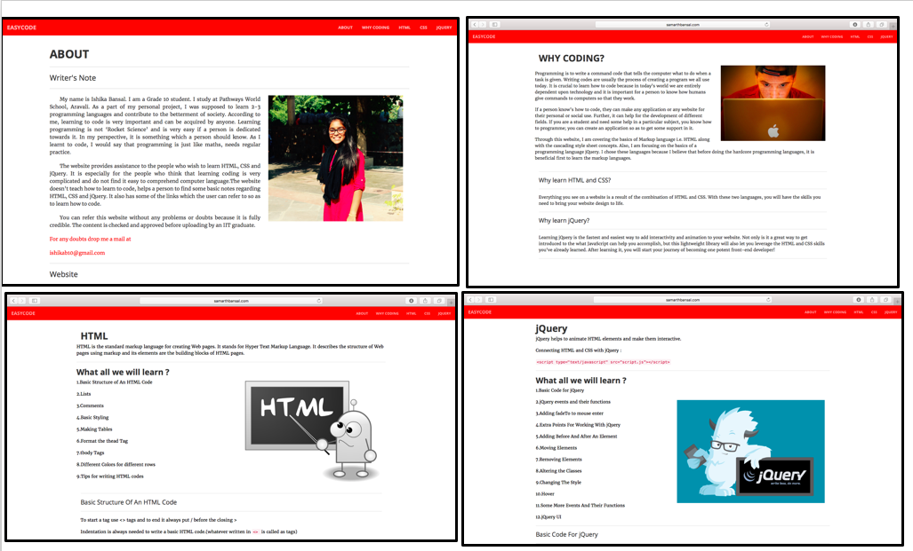
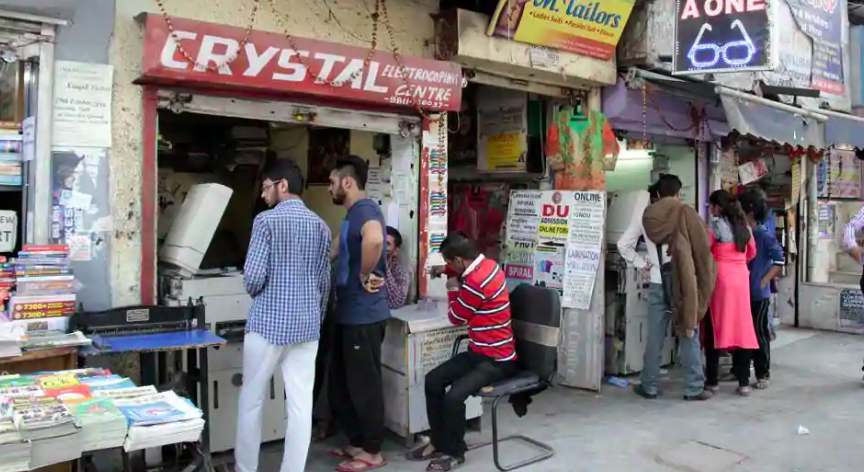

Ishika Bansal
Pathways World School, Aravali
List Of Projects
1.Website about coding
2.Learning Python
3.Sustainable Wall Hanging (Grade 10 Design Project)
4.Serving Tray (Grade 12 Design Project)
5.Extended Research in Economics
6.The Reverie - Movie Making
7.Girl Hygiene - Movie Making
8.Drama
Website about coding
- Self-learning project in grade 10.
- Learnt basics of web programming (HTML and CSS) through Codecademy, an online learning platform.
- Built a complete website EASYCODE which has instructions for other people to learn how to code.
- Used Twitter Bootstrap CSS framework.
- This project introduced me to Computer Science, a subject I choose in Grade 11 and 12.
- Click here for Source Code

Learning Python on Udacity
- In the summer of Grade 11, I decided to learn Python.
- I took online Computer Science MOOCs (massive open online courses) on Udacity.
- As part of the process, I made mini-projects like an economics quiz (Click here for source code)
- Then, I used my web programming skills (HTML, CSS) and Python, to build ‘Fresh Tomatoes’, a website to watch trailers for various Hollywood and Bollywood movies.(Click here for source code)

Sustainable Wall Hanging (Grade 10 Design Project)
- In 2016-17, I undertook a design project in which I made a sustainable wall hanging with storage—using an old pair of jeans.
- Product’s main aim is to help people store magazines, cups, keys and other small items in an easy and organised manner.
- I learnt how to unstitch using a seam ripper; how to mark accurate lines on the cloth using appropriate procedure; and using a sewing machine.

Serving Tray (Grade 12 Design Project)
- In 2018, I designed and built a serving tray which helps to conveniently serve drinks and snacks.
- The tray is made from leftover pine wood pieces from wood industries which makes it environmental friendly.
- The goal was to decrease the distress caused while serving drinks and make it a culture for people to use sustainable products.

Extended Research in Economics
- About: I studied the Patel Chest Market located in Delhi University. This market is a large printer market with around 80 small printer shops. These shops provide similar services at similar prices. But their consumer base is different.
- Why I did this: I was studying theories of different market structures—Monopoly, Oligopoly, Perfect Competition, Monopolistic Competition—in my Economics classes. I was curious to understand this in depth.
- Project question:“Which type of market structure does Patel Chest Market mostly resemble to?”
- Methodology: For this research project, I collected primary data by desigining a survey experiment in the market to understand both consumers and producers. Later, I backed up my findings using secondary sources

The Reverie - Movie Making
- We made a film on the theme, 'Dream, Desire, Destiny.'
- About the film: The idea was based on a disabled dancer and a deaf piano man. We showed how destiny played its part by bringing them together because of the medium of arts.
- This project gave me an insight as to what all elements go into creating a movie. For instance, lighting, camera angle, make up etc. I got to know how a film is directed and planned.
- The movie won the BEST FEATURE- FILM MAKING INCOGNITO 2017, an inter school competition conducted in Pathways School, Gurgaon.
Girl Hygine
- We made a short film to promote the ‘Swachh Bharat Abhiyan’ campaign. It talks about usage and disposal of sanitary napkins, and how it could affect women hygiene.
- About the film: The film suggests that an incinerator could be a good way to dispose of sanitary napkins. This can convince more women to use sanitary napkins. Besides this, planting 10 saplings for every 2 bags filled with sanitary napkins can help balance out the pollution caused by usage of incinerator.
- Achievement: The film won the first position in IILM’s Young Entrepreneur Ideation Challenge 2017 held at IILM University. The competition’s aim was to look for innovative solutions to a social problem.